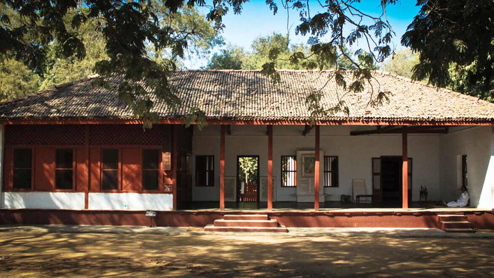
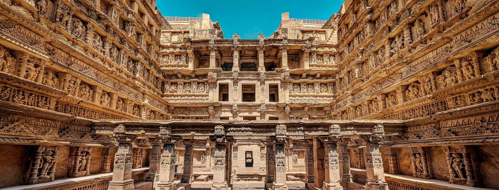
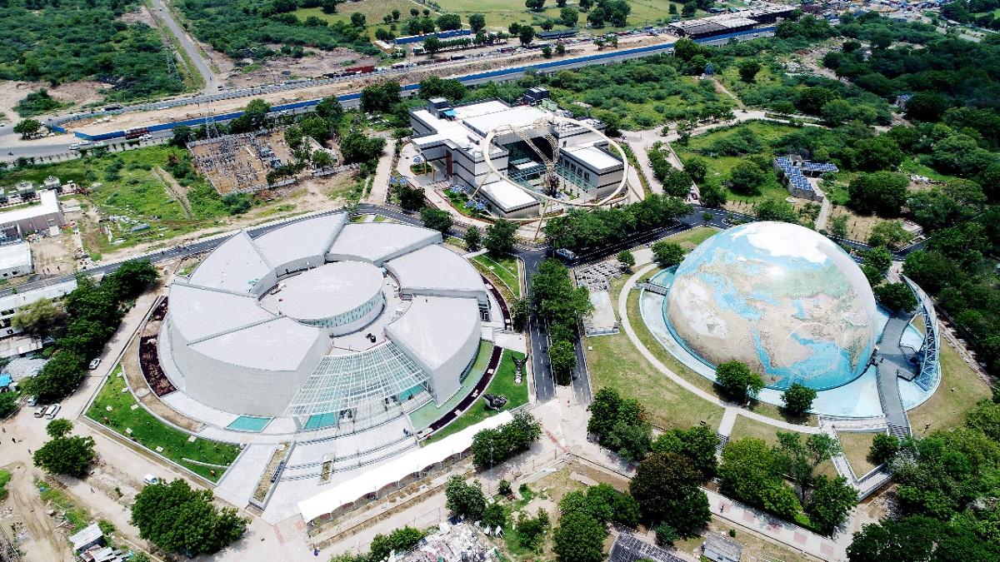

Sabarmanti Ashram
Architected in 1915, Sabarmanti Ashram was one of the many residences of Mahatma Gandhi. The Bhagavad Gita was recited here daily as part of the Ashram schedule. It was from here that Gandhi led the Dandi March. This Ashram is a national monument. Today, the Ashram is a museum dedicated to the life and principles of Gandhi.
The ashram has a museum, Gandhi Smarak Sangrahalaya, which preserves Gandhi's work and memory. The museum includes an archive, library, and exhibition on Gandhi's life.
Adalaj Step-well
The Adalaj Stepwell, also known as the Rudabai Stepwell or vav in Gujarati, is a five-story stepwell in Gujarat, India. Built in 1498 by Queen Rudadevi in memory of her husband, Rana Veer Singh, the stepwell is an example of Solanki architecture and is intricately carved from sandstone.
The stepwell has three entrances that lead to a platform with an octagonal top that rests on 16 pillars. The corners of the platform have shrines carved into them, and the five floors are spacious enough for people to gather. The carvings on the stepwell depict a variety of subjects, including women churning butter and adorning themselves in front of a mirror. The fifth floor offers a view of the well's deep turquoise waters, which some say seem to glow with inner light.
Science City
Gujarat Science City is a science education and entertainment center in Ahmedabad. The center is an initiative by the Gujarat government to encourage students to pursue science education. It opened in 2002 and expanded in 2021
The center also has exhibits on science, space, plants, nature, and robotics. It features interactive galleries, working models, virtual reality, activity corners, labs, and live demonstrations. Some say the aquatic area and robotic area are informative and elegant, while others say the hall of science needs an upgrade